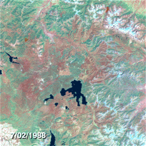

Left to the Reader: Forest Fires
This is the first edition of Left to the Reader - a monthly problem-solving blog written by the Brilliant team, including open-ended challenges for the community to solve and discuss. While the topics will vary, you can expect to push the boundaries of your analytical thinking through deep, quantitative exploration.
Overview
 Aerial photo of the fires near Napa, California. Photo credit: Michael Short, SF Chronicle.
As the recent fires in California have reminded us, forest fires can devastate communities in hours or days, propagating more quickly than we can put them out.
But they are a fact of life on a planet covered in trees.
Aerial photo of the fires near Napa, California. Photo credit: Michael Short, SF Chronicle.
As the recent fires in California have reminded us, forest fires can devastate communities in hours or days, propagating more quickly than we can put them out.
But they are a fact of life on a planet covered in trees.
By understanding the physics of forest fires, we can help form policies that make them more manageable. The conclusions affect millions of households in the U.S. alone.
While modeling specific forest fires is a complicated problem with many variables, computational science gives us a toolkit that does a surprisingly good job of capturing the main factors that broadly affect forest fire outcomes. This is a critical skill for anyone who needs to distill complex data sets into models that reflect the most important variables.
In this Left to the Reader, we will build up - step-by-step - to a basic model of the factors that govern the life cycle of a forest fire, including the structure of the landscape and the physics of the spread.
Here's how we'll get there:
- We'll learn about some basic features of forest fires, look at data, and observe some simple behaviors.
- We'll design a minimal model that captures the basic structural and dynamic features of wildfire.
- We'll apply a technique from statistical physics, called mean-field theory, to make mathematical predictions about the model.
- We'll employ a computer simulation to evaluate the predictions of our model and see what it has to say about public policy regarding wildfire.
Details and mechanisms
To take a stab at modeling a growing wildfire, let's get familiar with the details and mechanisms of forest fires.
As forests age and hydration fluctuates, trees and other foliage go through cycles of dryness that make them more or less susceptible to incineration. This leads to windows where forests are susceptible - characterized by a combination of drought, peak solar radiation, low humidity, and warm ambient temperature - during which significant fires can be easily triggered by random events like lightning strikes.
 Fig 1. A: Wind field overlaid on landscape. B. A rocky ravine that would impede fire. C. a dry meadow, full of fuel.
Fig 1. A: Wind field overlaid on landscape. B. A rocky ravine that would impede fire. C. a dry meadow, full of fuel.
There are also dynamical factors. For example, wind speed varies in space and time, and can change the pace of fire spreading or bias its course toward more or less flammable regions. Whether a fire turns toward a field of old pine or into a rocky ravine can be the difference between a fire's end and its beginning anew. Harder to predict, a spark or ember can catch a gust of wind and start a new fire in a distant part of the forest.
Knowing the particular details of a given forest would be great, and might allow us to make more accurate models of that forest — but it is hard to collect timely, forest-wide information for one forest, let alone several.
Before getting too far into the weeds we should ask: how important are the details?
Looking at the data
 Fig 2. Hypothetical distribution of fire sizes given normal balance of factors.
Fig 2. Hypothetical distribution of fire sizes given normal balance of factors.
To get an idea about the severity of forest fires, we can look at some data. One might think that forest fires are, in a sense, the balance between incendiary factors like fuel, heat, etc. and the things that stand in the way of combustion like hydration and rocks. If forest fires were strongly dependent on the details of individual forests, we'd expect to see data where there is an average behavior and the particular features of a forest make it more or less severe, producing a normal curve. As we'll see below, that's not what the data actually shows.
If forest fire severity produced a normal curve, what would it look like? To get a better sense of how the normal distribution behaves we can plot it on logarithmic axes, which allows us to observe its behavior over several orders of magnitude.

Notice that as we move away from the average, the probability of observing an event plummets to astronomically small values. If forest fires followed this normal distribution, we'd have to observe forest fires before we saw one that burned through of forest. Similarly, the common exponential distribution has non-negligible probability density over a small range before plummeting to what is effectively zero probability.
Instead what we find are patterns like those in Fig 3 (also shown as the black curve in Fig 2). These distributions are fundamentally different. There is no clustering about an average, or compression into a small range, as there is with the normal, exponential, and Poisson distributions — the burn areas have measurable probability well across seven orders of magnitude! This is consistent with the fact that we see extremely large forest fires like those in California.
In fact, these probability distributions show the hallmark of a remarkable property known as scale-invariance. Let's dive into what this means. Because the data exhibits a linear relationship when plotted on logarithmic axes, the of the frequency, and the of the area, are related by a line, or
where is the intercept of the data and is its slope. If we exponentiate both sides, this relationship becomes (the symbol means "is proportional to"). In other words, the probability of observing a forest fire of size is proportional to
.](../../../brioche/uploads/D1mfqlshDL-pnas_plots.jpg?width=600) Fig 3. Approximate scale invariance of forest fire burn areas, from Malamud et al., 1998.
Fig 3. Approximate scale invariance of forest fire burn areas, from Malamud et al., 1998.
Approximate Scale-invariance
Looking at the probability distribution of forest fire areas, which has the form we can see that the forest fires that burn out the greatest area of forest floor, are the most rarely observed. What if we're interested in the likelihood of fires of area
Given that we can see that
When this property holds over all values of forest fire area, it is known as scale-invariance. Though forest fires may not be truly scale-invariant (see Grassberger 2002), the forest fire data appears to show scale-invariant behavior over a wide range of forest fire areas.
The revelation is this: scale-invariance allows us to estimate the frequency of the largest (rarest and hardest to observe) forest fires in terms of the more easily measured frequencies of small ones.
If this widely observed behavior were dependent on the fine details of any particular forest, then it would be quite a conspiracy between the global growth of trees, landscapes, wind patterns, seed dispersal, etc. What's more likely is that fundamental features, shared by all forests, are what produce the patterns we see (in fact that's one of the implications of scale-invariance).
Scale-invariance raises a troubling question: if forest fires exhibit an indifference to details, then how can we anticipate the severity of a given forest fire? As we alluded above (in Details and Mechanisms), the prediction of individual forest fires is subject to all sorts of complexities, model chaos, and in general is not a very reliable tool. Thus, while a holistic understanding of any particular forest gives us more information, it is not necessarily useful in understanding the observable patterns in wildfire severity.
Happily, there are less particular, structural features that we can use to characterize forests, and use to model the course of nascent forest fires.
We're going to design a general model to interrogate forests in terms of their basic structure (tree density) and lightning frequency. In the process, we'll distill the complexity of factors like prevailing winds, geography, and other pesky factors and extract general lessons about how all forest fires behave.
Modeling parameters
For the rest of this Left to the Reader, we're going to model forest fires using the model outlined below.

Model rules
We can model the forest as a 2D lattice of dimensions The spatial density of trees measured in trees per unit area, captures the concentration of trees per unit area of the forest floor. We therefore also have a density of empty sites At time zero the forest contains no trees and the lattice sites are updated according to the rules below.
At each time step,
- Trees are replenished at empty lattice sites with probability
- Trees are lit on fire (e.g. by lightning) with probability
- If any of a non-burning tree's neighbors are on fire, then the tree is set on fire.

What is the state of the forest above in the next time step?
- In the setup shown above, the trees to the left and top of the flaming site would certainly be on fire in the next time step.
- In addition, the trees in the four corners each have probability of incinerating due to lightning strike.
- Similarly, the two gray sites each have probability to grow a new tree.
Is that all?
It might be surprising that a model meant to describe phenomena as rich and variegated as the range of forest fires can be stated so simply. It is important to stop here and ask whether we've missed something important.
On the surface, this model seems to contain no information about forest aging, hydration, or variations in landscape and it certainly does not incorporate prevailing winds, the succession of different plant species, or climate effects. In fact, the model actually does incorporate the first three effects, and the contribution of the last three do not appear necessary to explain the data.
Basic Model
Before we simulate a universe of forests, we can do some simple mathematics to see the basic relationships at play.
For example, how does the frequency of lightning strikes affect the size of the average forest fire?
 The forest ensemble.
The forest ensemble.
Let's introduce one last quantity—we'll call the number of trees that burn down in a fire (due to an initial lightning strike) and the average number of trees that burn down due to any given lighting strike If we calculate this on the lattice, taking into account the possible correlations between neighboring sites and the exact dynamic of the lattice, we'd be swiftly overwhelmed by the complexities, at least as rookie forest fire modelers.
To facilitate this calculation, we're going to use the idea of an ensemble of forests. This is an idea from statistical physics where we imagine there to be a large number of forests over which we take an average. In the ensemble, we can forget about the behavior of any one system and instead focus on how things work on average, across all of the systems. This is far easier than the detailed work of finding the trajectory of one forest in particular.
Concretely, the average forest has tree density and sees trees burn down per lightning strike, on average.
We can relate these quantities to each other by conservation equations. For example, because the average forest has tree density (which we'll write as from now on) it cannot be losing or gaining any trees on average. Therefore,
In other words, the number of trees that disappear due to fire in any time step must be equal to the number of trees that are planted to replace them in that same time step, on average.
The number of trees planted per time step
This style of calculation is called mean-field theory, because we are assuming that we can ignore spatial variations and consider the interaction of the average values with themselves. Since this is a strange and fascinating tool, we'll calculate the first part together.

Suppose we find the lattice in the state above and that On the left we can see three empty sites that each have the potential to be filled by planting events. How many of these to we expect to be filled on average?
The answer is We mark the newly birthed trees on the right with asterisks to showcase their newcomer status.
Looking case by case is might be fun, but it isn't going to get us anywhere. Instead, we can write the expected number of newly birthed trees as the density of empty sites times the probability of planting per lattice point per unit time times the number of lattice sites
Thus,
With this under your belt, try finding the number of trees that burn down per time step in the problem below:
Correct!
61% of people got this right.
What is the average number of trees that are consumed by flames per unit time?
Recall that new fires are initiated by lightning striking a random site on the lattice; if it's occupied by a tree then it will ignite; if it's empty then nothing will happen. The average fire rages until trees are burnt down.
With these two quantities in hand, we can equate them to find as a function of tree density and the frequency of lightning strikes.
After some algebra, and recalling that we find
A full solution is provided in the problem above.
The trade-off
The last result suggests an intriguing relationship between the number of trees burned down in the typical forest fire, and the frequency of lightning strikes that start new fires. Naively, we might associate a great prevalence of fire with more fearsome infernos, but our equation of state suggests the actual relationship is more subtle.
Correct!
60% of people got this right.

Given the result we just obtained, what can we say about the relationship between the rate of fire setting events and the size the average forest fire all else being equal?
To really interrogate this question, we'll have to move beyond mathematical analysis and simulate the forest environment with code.
Simulating the forest
Luckily, we can make some minor modifications to code we saw in a recent Problem of the Week.
 Fig 4. Fire burn time as a function of forest density.
Fig 4. Fire burn time as a function of forest density.
In that problem we employed the same model we use here, with the exception that we looked at the course of fires resulting from single lightning strikes upon preformed forests. Averaging over thousands of instances of the forest, we found an intriguing relationship between tree density and the duration of the forest fire shown in Fig 4. While this might seem counterintuitive, there is a simple explanation:
- At low tree densities, the forest is not connected enough for fires to spread far beyond their starting point.
- At very high densities, the forest is fully connected and fires spread at their fastest rate.
- It is at the critical density where the forest first becomes dense enough to sustain large scale fires, but still has hard to access pockets, that fires burn the longest.
In statistical physics, this is known as a phase transition, as we can think of the value as separating two qualitatively different kinds of forest: sparsely connected forests that don't suffer large-scale wildfires, and thick forests that essentially burn to completion whenever lightning strikes. This result reflects a deep connection to the problems of percolation theory, the focus of a future Left to the Reader.
Modeling the intervention strategy
Now that we've established our model, let's return to our original question.
Wildfires are a problem society must face as long as people insist on living near forests — so how best do we manage them? The trade-off we found between the size of the average fire and the frequency of lightning strikes, presents an interesting question to those interested in controlling wildfires: what, if any, effect do common fire control tactics have upon the severity of wildfires?

We can simulate the impact of fire control policies by varying the value of from low to high. To see this, realize that the impact of a lightning strike is to burn down some fraction of the forest. If we make it a policy to try to put fires out as soon as they start burning, so that they don't burn down any significant area of the forest, it is as if we've simply eliminated some fraction of the fires, so that becomes
We'll call the high- limit the "natural regime" and the low- limit the "Smokey-the-Bear regime", for the famous mascot of fire control who encouraged every one of us to put out even the smallest forest fire, lest it transform into a raging inferno.
To see how changing affects the nature of forest fires, we can use the code environment below where we have programmed our model. The simulation starts off with an empty of sites, after which we apply the following routine for 4000 time steps:
- Each site in the lattice is tested to see if it's empty. If it's empty, then we try to plant a tree there with probability
- If it isn't empty, we check to see whether any of its neighbors are on fire in which case we set it on fire.
- If none of its neighbors are on fire, but it is a tree, we allow lightning to set it on fire with probability
- If the tree is currently burning, we set the lattice site to
We can be as sophisticated as we want to in measuring the dynamics of forest fire, but a quick way to gain insight is to simply keep track of how many trees are burning as a function of time (inspect for yourself to see how the number of burning trees is kept track of in the code). Our lattice is set to and is set to which means that in the absence of fire, it should take time steps to plant the entire forest. We initially set so that the probability of lightning striking a lattice point is half the probability of a tree being planted at an empty site.
Problem: How does the nature of forest fire vary as you lower the incidence of lightning strikes?
Note: While you're encouraged to play with all the parameters ( and ,) keep in mind that there is a runtime limit of
Plot: Time series of the number of trees vs time as varies from to is held constant at throughout.
For the default parameters of the system, we observe the time series shown in the top row of the figure to the right.
The number of trees hovers around so that
We can see that from moment to moment, the number of trees fluctuates, but the fluctuations are small relative to the mean number of trees. This implies that the number of trees that burn down per unit time is small relative to the number of trees. In other words, although there are many fires they are each relatively inconsequential and short lived.
As we lower we notice several things.
- The average number of trees in the forest increases, rising up to nearly when
- The fluctuations in the number of trees increases tremendously. When the fires are not big enough to meaningfully affect the state of the forest, as we noted above. As drops, the number of fires is reduced, but the swing in tree count explodes. This suggests that the severity of forest fires is increasing.
By the time the fluctuations are almost equal to the size of the system At this point the fires are so severe that the typical fire can essentially burn down the entire forest!
Note that the drops in these plots slightly underestimate the severity of fire, as new trees can start to grow in the fire's wake even as it continues to burn across the lattice.
To get a quantitative measure for the severity of fire, we should measure the average number of trees burned down in a fire, It is not easy to do this directly, as tracking the provenance of a single tree's burning down requires the use of recursive search algorithms over the lattice. Instead, we can use the connection described below.
Note that the average number of trees that grow between lightning strikes, is equal to the rate of tree growth divided by the rate of lightning strikes. Thus,
However, the right side is the expression for that we found before. Thus, we can measure the size of the average cluster of trees burned down by a single lightning strike by counting the number of trees that grow between strikes.
Measuring as a function of is important, but we'll leave this for the first of the Discussion Challenges at the end of the post. In the meantime, we can already begin to explain a puzzling and painful lesson learned by the US Forest Service over a century of trying to contain wildfires.
The Yellowstone Effect
 Aerial shot of 1988 Yellowstone fires
Aerial shot of 1988 Yellowstone fires
Up until the early 1970s, the US Forest Service maintained a policy to suppress every fire discovered in the forests it managed within 24 hours of their discovery. This zeal for fire-less forests knew few bounds, perhaps peaking with the invention of so-called "smoke-jumpers": firefighters who would parachute out of airplanes to fight fires located in hard-to-reach regions of the forest. The policy was well-intentioned, influenced by a string of devastating fires in the late 1800's that tore through Midwest territories and resulted in significant casualties.
 Time lapse of the 1988 Yellowstone fire. Credit: NASA/Goddard Space Flight Center
But based on our studies here, we can see a fatal flaw in this approach. By stopping most fires before they have a chance to burn through any significant portion of the forest, the rangers were effectively setting below its natural value. As we saw above, this can be expected to provide short term stability at the expense of catastrophic, system wide forest fires.
In June 1988, this came to a head when lightning strikes set off a handful of small fires in the park. The service had recently come to appreciate the utility of natural fires and allowing small fires to burn out, and therefore decided to let them burn themselves out.
However, the forest was already tuned to and was in a state ripe for inferno. By the end of July, the fires had not burned themselves out and had destroyed acres of forest. At this point, it proved too late to implement fire controls and the fires raged on, eventually consuming roughly acres of Yellowstone, or of the park. In executing the no-fire policy the service was myopic, and tuned the forest to a state destined for a system-scale inferno.
What did we learn?
We've covered a lot of ground here. Before getting into the discussions, let's take a step back and recall the path that got us here. We started out by looking at data from real forest fires where we noticed that the probability of forest fires of different sizes is scale-invariant. This implies that the fine details of individual forests are not responsible for the global behavior. Inspired by this, we designed a simple, universal model that considered only two explicit characteristics of the forest: the rate of tree replenishment and the rate of lightning strikes
We then used mean-field theory to calculate a simple prediction for the size of forest fires as a function of lightning frequency () and verified this by explicit simulation in the code environment. This simple model helped us to understand the devastating 1988 Yellowstone fires and the contribution of forest control policies to the severity of wildfire.
In the end, forest fires are a natural clearinghouse for old trees and flammable materials that work to keep the forest in a healthy state. Attempts to naively constrain them can bottle up the natural volatility of the forest, causing it to erupt violently all at once.
In the Discussion Challenges below we'll build on top of these lessons and see if we can take things to the next level. Post your thoughts in the comments below!
Discussion Challenges
Discussion #1
Modify the code we used to measure the number of trees as a function of time to measure Remember: this is difficult to measure directly, and it's much easier to use the mathematical connection we derived in this Left to the Reader.
Discussion #2
Our simulation shows that a zero-tolerance policy increases the likelihood of large-scale fires, but it doesn't suggest that it's impossible to do fire control in a smarter way. Can you design a fire suppression policy that increases the density of trees in the forest while reducing the magnitude of the average forest fire? Can you show that it works using the simulation?
Discussion #3
Moving beyond measurement of the average fire size is difficult. Can you design an algorithm that measures the size of the fire that results from each individual lightning strike? How does your estimate of fire size counts change with (To do this with statistical significance and/or larger systems, you may need to run your code offline due to the code environment's runtime limit of )
Note by
Josh Silverman
3 years, 8 months ago
Easy Math Editor
This discussion board is a place to discuss our Daily Challenges and the math and science related to those challenges. Explanations are more than just a solution — they should explain the steps and thinking strategies that you used to obtain the solution. Comments should further the discussion of math and science.
When posting on Brilliant:
*italics*or_italics_**bold**or__bold__paragraph 1
paragraph 2
[example link](https://brilliant.org)> This is a quote# I indented these lines # 4 spaces, and now they show # up as a code block. print "hello world"\(...\)or\[...\]to ensure proper formatting.2 \times 32^{34}a_{i-1}\frac{2}{3}\sqrt{2}\sum_{i=1}^3\sin \theta\boxed{123}Comments
Excellent initiative. This is the kind of Physics which would teach real life problem solving that is actually applicable to resolve issues like this.
Sorry, but when exactly will the November and December version of Left to the Readers come out?
Log in to reply
We'll be trying some more long form material in the future. But for now, we've paused the series.
When is the next left to the reader come out?
Hi today i join to brilliant.org and i am feeling good i love python program for programming we need to train ourself as problem slover
Log in to reply
Glad to hear that Santhosh. Yep, coding helps us explore problems where the math is overwhelming (if only at first).
I think the boxed equation for forest-fire areas, P(A) = P(A{max})*(A/A{max})^{\beta} given above, is wrong. Either the power is -\beta or the ratio should be A_{max}/A. The sentence just before this equation says that P(A) ~ A^{-\beta} and the equation says that P(A) ~ A^{+\beta}...
Log in to reply
Good catch @Mark Edwards , the quotient was flipped.
plz share your problem no matter it is small or big it hep other to learn more
This is a great initiative, as others have said!
I know I'm ignorant but..there is someone king enough to explain me where do the libraries "numpy" and "matplotlib.pyplot" come from?
Log in to reply
numpyandmatplotlibare open source Python libraries for numerical computing, and plotting, respectively. They're available to use in the codex along with other packages likebiopython(a computational biology library),qutip,pandasand some others.Log in to reply
Thank you Josh!
I am fresher